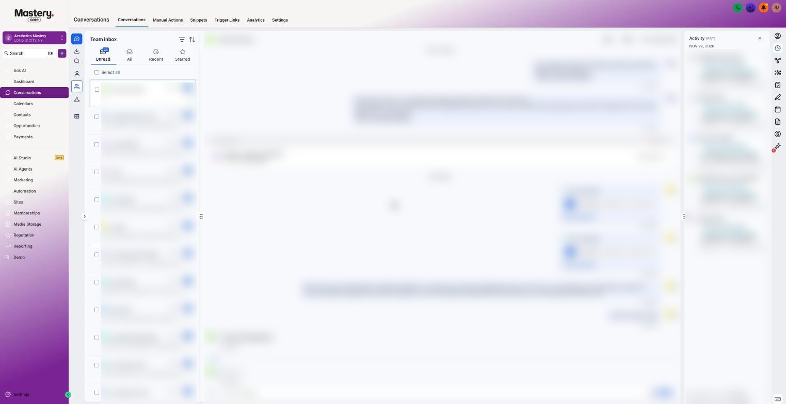
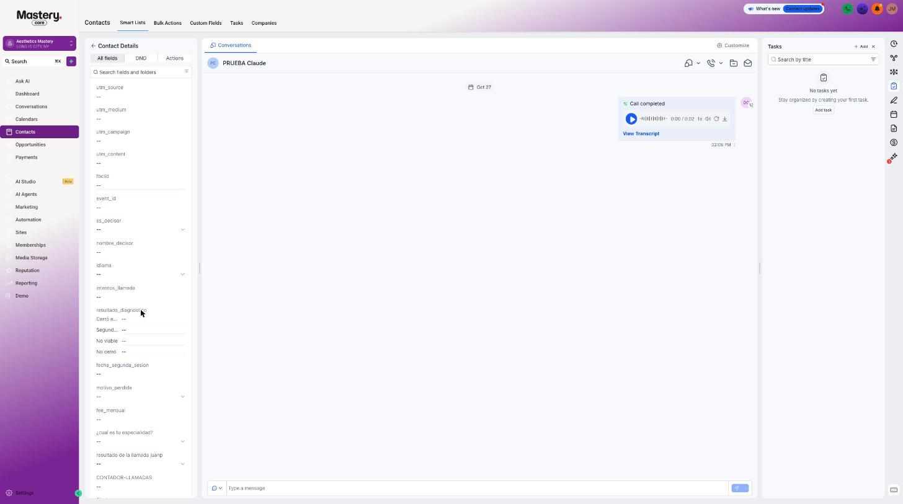
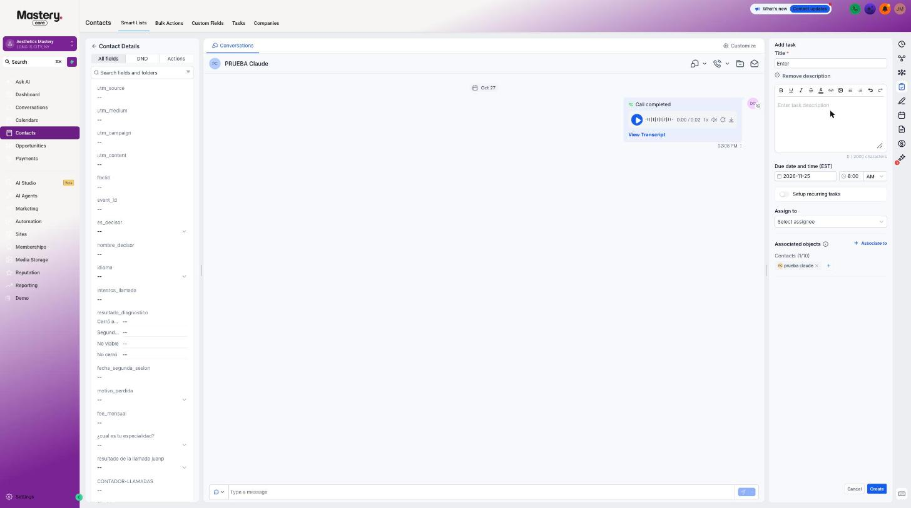
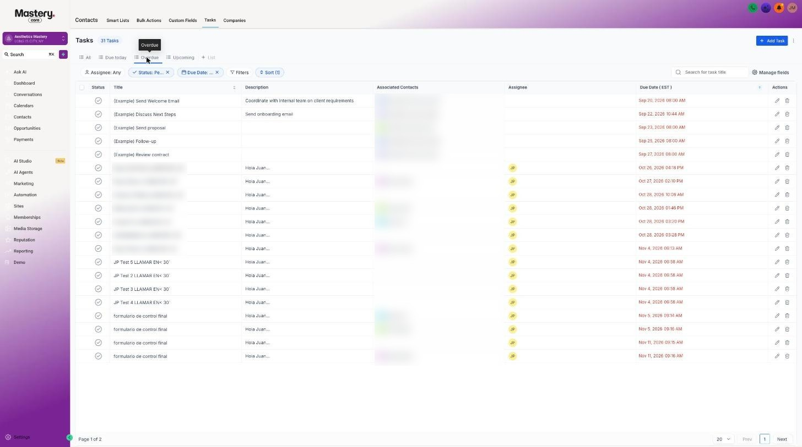
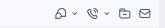
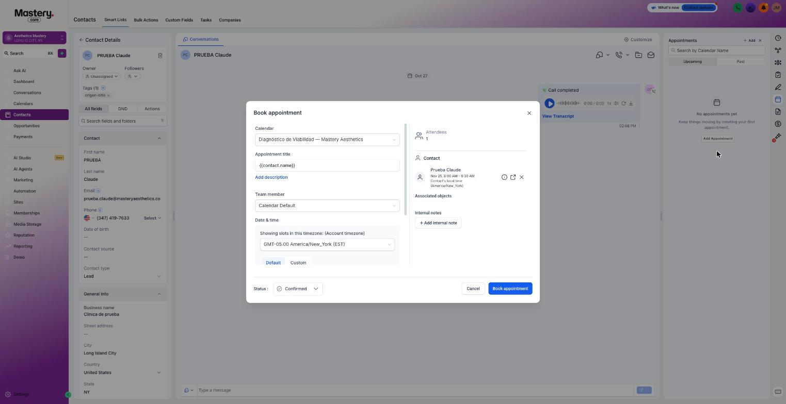
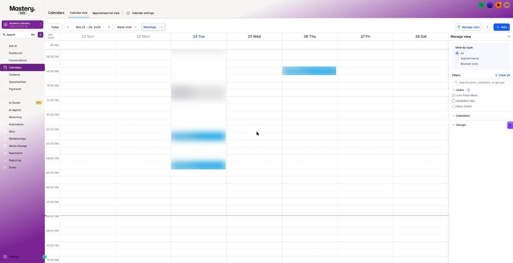
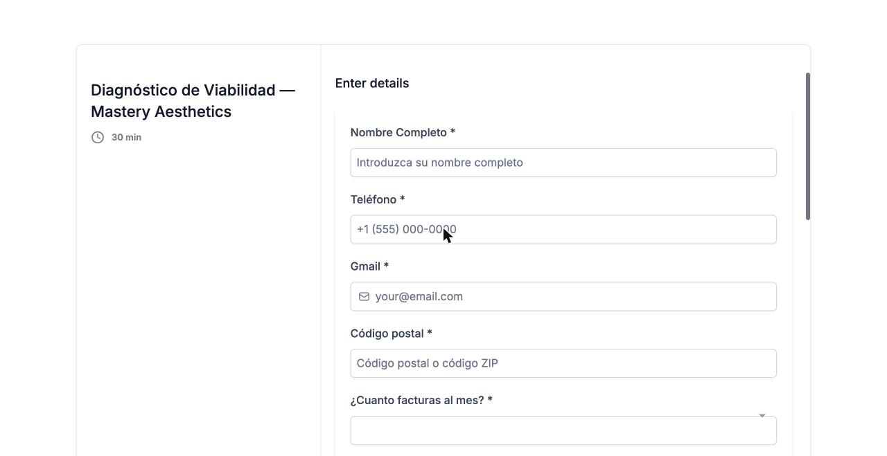
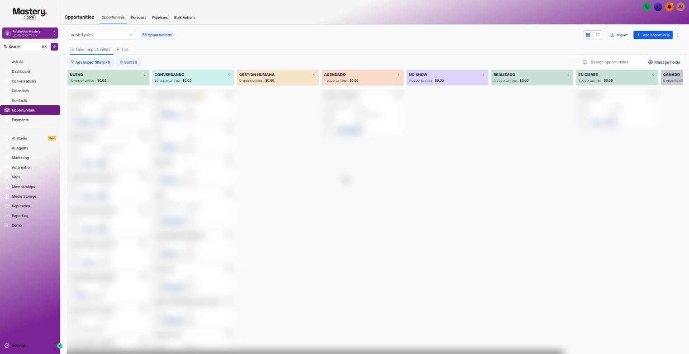
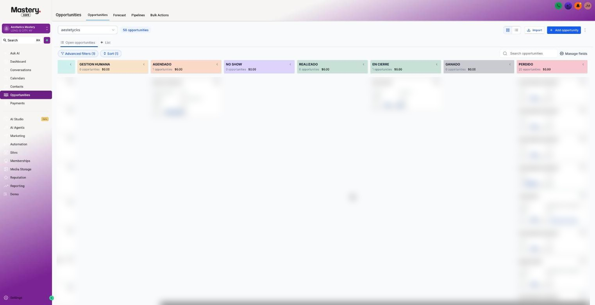

Lección 3 · El CRMLesson 3 · The CRM
Si no está en el CRM, no pasóIf it isn’t in the CRM, it didn’t happen
1AprendeLearn
ConversacionesConversations
- Revisas cada chat del más antiguo al más reciente.
- Aunque el lead haya respondido un mensaje automático, la llamada se hace igual.
- Solo se escribe por mensaje a quien marcó la casilla de mensajes, de 9:00 a. m. a 8:00 p. m. hora del lead.
- → ConversacionesConversations: https://app.gohighlevel.com/v2/location/CDWMBDDuWrhpV6P6QdqP/conversations/conversations
→ Cómo se haceHow it’s done: guía 1guide 1
- You check each chat from oldest to newest.
- Even if the lead replied to an automatic message, the call is still made.
- You only text someone who checked the texting box, from 9:00 a.m. to 8:00 p.m. lead’s local time.
- → ConversacionesConversations: https://app.gohighlevel.com/v2/location/CDWMBDDuWrhpV6P6QdqP/conversations/conversations
→ Cómo se haceHow it’s done: guía 1guide 1
Contactos: la ficha y las notasContacts: the record and the notes
- La ficha trae nombre, clínica, especialidad, facturación y qué tema le interesó. Lo que ya está en el contacto no se pregunta.
- Mira el estado del lead para saber su hora local.
- Nota: Add note → Description (obligatoria) → Save. Cada nota dice qué dijo el lead y cómo terminó.
- Si el resultado no es definitivo: «PENDIENTE — [qué falta exacto]», para que cualquiera que abra la ficha sepa en qué quedó.
- → Contactos (ficha del lead)Contacts (lead record): https://app.gohighlevel.com/v2/location/CDWMBDDuWrhpV6P6QdqP/contacts/smart_list/All
→ Cómo se haceHow it’s done: guía 3guide 3
- The record has name, clinic, specialty, revenue and which topic interested them. What is already on the contact is not asked again.
- Check the lead’s state to know their local time.
- Note: Add note → Description (required) → Save. Each note says what the lead said and how it ended.
- If the result isn’t final: «PENDIENTE — [what exactly is missing]», so anyone opening the record knows where it stands.
- → Contactos (ficha del lead)Contacts (lead record): https://app.gohighlevel.com/v2/location/CDWMBDDuWrhpV6P6QdqP/contacts/smart_list/All
→ Cómo se haceHow it’s done: guía 3guide 3
TareasTasks
- Vistas: All, Due today, Overdue, Upcoming. Tu lista es: asignadas a ti, hoy y vencidas.
- Se trabaja de arriba a abajo, sin saltar ninguna. Cada tarea se marca completada; nunca se borra ni se deja abierta.
- Si no contesta, creas la tarea del siguiente intento: Add Task → Title «Llamar — intento 3 de 6» (por ejemplo) → fecha y hora del día que toca → Assign to: tú → Create.
- Si el lead agenda antes de que llegue una tarea futura, se completa con la nota «Ya no aplica — lead agendó antes».
- → TareasTasks: https://app.gohighlevel.com/v2/location/CDWMBDDuWrhpV6P6QdqP/tasks
→ Cómo se haceHow it’s done: guía 2guide 2
- Views: All, Due today, Overdue, Upcoming. Your list is: assigned to you, today and overdue.
- Work top to bottom, skipping none. Each task is marked completed; never deleted, never left open.
- If they don’t answer, you create the next attempt’s task: Add Task → Title «Llamar — intento 3 de 6» (for example) → the date and time of the day it is due → Assign to: you → Create.
- If the lead books before a future task arrives, it is completed with the note «Ya no aplica — lead agendó antes».
- → TareasTasks: https://app.gohighlevel.com/v2/location/CDWMBDDuWrhpV6P6QdqP/tasks
→ Cómo se haceHow it’s done: guía 2guide 2
Triage: antes de llamarTriage: before you call
- Abre el CRM y revisa los chats del más antiguo al más reciente.
- Clasifica cada lead: qué tema le interesó, si ya escribió algo por SMS, correo o WhatsApp y qué dato de contacto ya dejó.
- Confirma la tarea de cada lead y ordena el día: primero los leads nuevos y las tareas vencidas, después los seguimientos.
- Si ya tiene cita, no se llama para agendar: solo se confirma.
- Mira el estado del lead para saber su hora local; en otro huso, los horarios se dicen en su hora y en ET.
- Deja una nota en cada chat revisado con tus iniciales.
- Open the CRM and check the chats from oldest to newest.
- Classify each lead: which topic interested them, whether they already wrote by SMS, email or WhatsApp and which contact detail they already left.
- Confirm each lead’s task and order the day: new leads and overdue tasks first, then follow-ups.
- If they already have an appointment, you don’t call to book: you only confirm.
- Check the lead’s state to know their local time; in another time zone, times are said in their time and in ET.
- Leave a note on each chat reviewed with your initials.

app_01_conversacion.png
app_02_ficha.png
app_03_tareas.png
app_04_notas.png
g01_conversaciones.jpg
01_ficha_contacto.jpg
02_campos_del_lead.jpg
04_agregar_nota.jpg
05_crear_tarea.jpg
06_tareas_vencidas.jpg2PracticaPractice
- En el contacto «PRUEBA Claude» abre la ficha y di dónde ves la clínica, la especialidad, la facturación y el tema.
- Abre «Add note» y escribe la nota «PENDIENTE — intento 1 sin respuesta» con tus iniciales (cancela sin guardar).
- Abre «Add Task» y di qué título y qué vencimiento pondrías a la tarea del intento 2.
- On the «PRUEBA Claude» contact open the record and say where you see the clinic, specialty, revenue and topic.
- Open «Add note» and write the note «PENDIENTE — intento 1 sin respuesta» with your initials (cancel without saving).
- Open «Add Task» and say which title and due date you would give the attempt 2 task.
3Apruebas cuandoYou pass when
Encuentras cada pantalla sin ayuda y dices el título exacto de la nota y de la tareaYou find each screen on your own and say the exact title of the note and the task
Lección 4 · La llamada de contactabilidadLesson 4 · The contactability call
Una llamada feliz: abrir, confirmar quién decide, preguntar la facturación y agendarA happy call: open, confirm the decision maker, ask revenue and book
1AprendeLearn
Es el speech 01. Cómo sonar: con buena actitud y con ganas, como si fuera la primera llamada feliz del día. Sonríe antes de que conteste, habla más lento de lo normal y haz una pausa corta después de decir «Mastery Aesthetics». Si hay un silencio largo o una respuesta tibia, una pregunta corta para reabrir. Se llama siempre, a todo lead que entra, aunque ya haya respondido un mensaje automático.
This is speech 01. How to sound: upbeat and eager, as if it were the first happy call of the day. Smile before they pick up, speak slower than usual and pause briefly after saying «Mastery Aesthetics». If there is a long silence or a lukewarm answer, ask one short question to reopen. You always call every lead that comes in, even if they already replied to an automatic message.
1 · Apertura1 · Opening
- Si al contestar no se oyó el aviso de grabación del sistema, primero: «Esta llamada puede ser grabada para fines de calidad.»
- Apertura A (ya sabes el tema): se nombra desde la primera frase.
- Apertura B (no sabes el tema): se abre general y se pregunta.
- Desde el paso 2 la llamada es la misma para las dos.
- If the system’s recording notice was not heard when they answered, first: «Esta llamada puede ser grabada para fines de calidad.» (“This call may be recorded for quality purposes.”)
- Opening A (you know the topic): the topic is named in the first sentence.
- Opening B (you don’t know the topic): open general and ask.
- From step 2 on the call is the same for both.
Solo en la apertura B, enseguida: «Cuéntame rapidito, ¿qué te llamó la atención del anuncio: lo de pagar la publicidad sin que salga de tu bolsillo, o lo de que tus pacientes vuelvan?»
Si dice «ahora no puedo»: «Tranquilo, no hay problema. ¿Te parece si te escribo para cuadrar un mejor momento, o te llamo hoy más tarde?»
Only in opening B, right away: «Tell me quickly, what caught your attention in the ad: paying for advertising without it coming out of your pocket, or getting your patients to come back?»
If they say “I can’t right now”: «No problem. Shall I text you to set a better time, or call you later today?»
2 · Confirmar quién decide2 · Confirm the decision maker
- Sin quien decide no se agenda.
- Without the decision maker you don’t book.
Si no puede estar: «¿Me compartes su número, o cuál es el mejor momento para hablar con esa persona?»
If they can’t: «Could you share their number, or what is the best time to talk to them?»
3 · Preguntar la facturación3 · Ask about revenue
Cualquier facturación mayor a $0: sigues con el paso 4 y agendas el diagnóstico.Any revenue above $0: you go on to step 4 and book the diagnosis.
Todavía no factura ($0): no califica. «Gracias por contarme. Hoy lo que tenemos no es lo que tu clínica necesita en este momento. Si algo cambia, escríbenos y lo retomamos.»Not billing yet ($0): does not qualify. «Thanks for telling me. What we have today is not what your clinic needs right now. If anything changes, write to us and we’ll pick it up.»
- La cifra no se repite ni se comenta en voz alta.
- The figure is not repeated or commented on out loud.
4 · Una pregunta para entender qué busca4 · One question to understand what they want
- Una sola pregunta. En la apertura B ya se hizo: se salta.
- Pagar la publicidad: «¿Hoy cómo estás pagando la publicidad de la clínica, y cómo te ha ido con eso?»
- Que los pacientes vuelvan: «¿Hoy qué pasa con el paciente que vino una vez y no volvió? ¿Alguien le hace seguimiento?»
- Después de escuchar: «Justo eso es lo que revisamos en la llamada con tus números.»
- One question only. In opening B it was already asked: skip it.
- Paying for advertising: «How are you paying for the clinic’s advertising today, and how has it gone?»
- Getting patients back: «What happens today with the patient who came once and didn’t come back? Does anyone follow up?»
- After listening: «That is exactly what we review on the call with your numbers.»
5 y 6 · Dos horarios y confirmación en voz alta5 and 6 · Two time options and spoken confirmation
- Siempre dos horarios reales, en días distintos, uno de mañana y otro de tarde, con al menos 24 horas de aviso. Nunca «¿cuándo te queda bien?». → CalendariosCalendars: https://app.gohighlevel.com/v2/location/CDWMBDDuWrhpV6P6QdqP/calendars/view
→ Cómo se haceHow it’s done: guía 6guide 6
- Always two real time options, on different days, one morning and one afternoon, with at least 24 hours’ notice. Never «when suits you?». → CalendariosCalendars: https://app.gohighlevel.com/v2/location/CDWMBDDuWrhpV6P6QdqP/calendars/view
→ Cómo se haceHow it’s done: guía 6guide 6
Si ninguna le sirve: «¿Qué día te funciona mejor? Te busco el espacio más cercano.»
If neither works: «Which day works best for you? I’ll find the closest slot.»
Si no hay correo: «¿A qué correo te mando el enlace de la videollamada?»
If there is no email: «Which email should I send the video call link to?»
→ Contactos (ficha del lead)Contacts (lead record): https://app.gohighlevel.com/v2/location/CDWMBDDuWrhpV6P6QdqP/contacts/smart_list/All
→ Cómo se haceHow it’s done: guía 3guide 3
Si contesta en inglésIf they answer in English
- Toda la llamada sigue en inglés.
- The whole call continues in English.
Buzón de voz (solo después de la segunda marcada)Voicemail (only after the second dial)
- «Te escribo por mensaje» solo si el lead marcó la casilla de mensajes; si no, queda la llamada.
- «I’ll text you» only if the lead checked the texting box; otherwise the call is what remains.
·ObjecionesObjections
| Lo que diceWhat they say | Respuesta (termina siempre en los 2 horarios)Answer (always ends in the 2 time options) |
|---|---|
| ¿Cuánto cuesta?How much does it cost? | «Depende de tu tratamiento y tu facturación, por eso lo vemos con tus números en el diagnóstico: sales sabiendo exactamente qué incluye y cuánto. ¿Te sirve [h1] o [h2]?»«It depends on your treatment and your revenue, so we look at it with your numbers in the diagnosis: you leave knowing exactly what it includes and how much. Does [h1] or [h2] work?» |
| ¿Qué garantía tienen?What guarantee do you have? | «Sí hay un compromiso por escrito, atado a resultados de tu tratamiento de mayor valor. Te lo explicamos completo en el diagnóstico. ¿[h1] o [h2]?»«Yes, there is a written commitment tied to the results of your highest-value treatment. We explain it fully in the diagnosis. [h1] or [h2]?» |
| Mándame informaciónSend me information | «Te lo puedo resumir: en 30 min revisamos tus números y te decimos si califica a la Reactivación Asistida™ y a la Pauta Asistida™. Sin eso, la información sería genérica. ¿[h1] o [h2]?»«I can sum it up: in 30 min we review your numbers and tell you whether you qualify for Reactivación Asistida™ and Pauta Asistida™. Without that, the information would be generic. [h1] or [h2]?» |
| Ya tengo agenciaI already have an agency | «Perfecto, el diagnóstico te sirve igual para comparar: vemos qué te está dando hoy y qué se podría sumar. ¿[h1] o [h2]?»«Perfect, the diagnosis still helps you compare: we see what it gives you today and what could be added. [h1] or [h2]?» |
| No tengo tiempoI don’t have time | «Son 30 min por videollamada y los ajustamos a tu agenda. ¿[h1] o [h2]?»«It’s 30 min by video call and we fit it to your schedule. [h1] or [h2]?» |
| ¿Qué es la Pauta Asistida?What is Pauta Asistida? | «Es para escalar los anuncios sin que salgan de tu bolsillo, si tu clínica califica. En el diagnóstico vemos si aplica. ¿[h1] o [h2]?»«It’s for scaling the ads without them coming out of your pocket, if your clinic qualifies. In the diagnosis we see if it applies. [h1] or [h2]?» |
| ¿Qué es la Reactivación Asistida?What is Reactivación Asistida? | «Es para que un paciente te compre varias veces, no una sola. En el diagnóstico vemos cuánto hay en tu base. ¿[h1] o [h2]?»«It’s so a patient buys from you several times, not just once. In the diagnosis we see how much is in your base. [h1] or [h2]?» |
| ¿Funciona en mi ciudad o estado?Does it work in my city or state? | «Trabajamos con clínicas en todo EE.UU. En el diagnóstico vemos tu mercado. ¿[h1] o [h2]?»«We work with clinics all over the US. In the diagnosis we look at your market. [h1] or [h2]?» |
| ¿Quién es Mastery? / ¿Quién es Juan Pablo?Who is Mastery? / Who is Juan Pablo? | «Mastery Aesthetics es la línea de Mastery para clínicas estéticas; Juan Pablo Mesa es su Venture Founder. ¿Agendamos el diagnóstico: [h1] o [h2]?»«Mastery Aesthetics is Mastery’s line for aesthetic clinics; Juan Pablo Mesa is its Venture Founder. Shall we book the diagnosis: [h1] or [h2]?» |
| ¿Tienen casos?Do you have cases? | «En el diagnóstico revisamos con los números de tu clínica qué aplica. ¿[h1] o [h2]?»«In the diagnosis we review with your clinic’s numbers what applies. [h1] or [h2]?» |
| Lo voy a pensarI’ll think about it | «Claro. El diagnóstico no te compromete a nada y te da los números para decidir. ¿[h1] o [h2]?»«Of course. The diagnosis commits you to nothing and gives you the numbers to decide. [h1] or [h2]?» |
| ¿De qué es esto? No me acuerdoWhat is this about? I don’t remember | «Tranquilo, hace poco viste un anuncio nuestro sobre [tema] y dejaste tus datos. Solo te llamo para agendar la llamada de 30 minutos.»«No worries, you recently saw an ad of ours about [topic] and left your details. I’m only calling to book the 30-minute call.» |
| No me interesaI’m not interested | «Todo bien, gracias por decírmelo. Si en algún momento cambia algo, aquí estamos.»«All good, thanks for telling me. If anything changes, we’re here.» |
| No me llamen másDon’t call me anymore | «Entendido, no te volvemos a llamar. Que tengas buen día.»«Understood, we won’t call you again. Have a good day.» |
| Algo que no está aquíSomething that isn’t here | «Eso te lo resuelve el equipo en el diagnóstico. ¿[h1] o [h2]?»«The team answers that in the diagnosis. [h1] or [h2]?» |
Cuando no contesta: 6 intentosWhen they don’t answer: 6 attempts
- Cada intento son 2 marcadas seguidas: si la primera no contesta, vuelves a marcar de inmediato. Las 2 cuentan como un solo intento. Buzón de voz solo después de la segunda. → App LeadConnectorLeadConnector app: iPhone https://apps.apple.com/us/app/lead-connector/id1564302502 · Android https://play.google.com/store/apps/details?id=com.LeadConnector
→ Cómo se haceHow it’s done: guía 4guide 4 - Primer intento: máximo 30 minutos hábiles desde que entra el lead. Fuera de horario hábil no se llama: pasa al siguiente día hábil.
- Después de cada intento sin respuesta: creas la tarea del siguiente intento y dejas la nota «PENDIENTE — intento N sin respuesta». → TareasTasks: https://app.gohighlevel.com/v2/location/CDWMBDDuWrhpV6P6QdqP/tasks
→ Cómo se haceHow it’s done: guía 2guide 2→ Contactos (ficha del lead)Contacts (lead record): https://app.gohighlevel.com/v2/location/CDWMBDDuWrhpV6P6QdqP/contacts/smart_list/All
→ Cómo se haceHow it’s done: guía 3guide 3 - El lead que no contesta no es un lead perdido: la mayoría no contesta un número desconocido.
- Tras el intento 6 sin respuesta, un día hábil después, la oportunidad pasa a Perdido: motivo «sin respuesta» si estaba en Nuevo, «no contactable» si estaba en Gestión Humana. Si el lead escribió por algún canal, no se cierra. → OportunidadesOpportunities: https://app.gohighlevel.com/v2/location/CDWMBDDuWrhpV6P6QdqP/opportunities
→ Cómo se haceHow it’s done: guía 9guide 9
- Each attempt is 2 dials in a row: if the first isn’t answered, you dial again immediately. The 2 count as one attempt. Voicemail only after the second. → App LeadConnectorLeadConnector app: iPhone https://apps.apple.com/us/app/lead-connector/id1564302502 · Android https://play.google.com/store/apps/details?id=com.LeadConnector
→ Cómo se haceHow it’s done: guía 4guide 4 - First attempt: at most 30 business minutes after the lead comes in. Outside business hours you don’t call: it moves to the next business day.
- After each unanswered attempt: you create the next attempt’s task and leave the note «PENDIENTE — intento N sin respuesta». → TareasTasks: https://app.gohighlevel.com/v2/location/CDWMBDDuWrhpV6P6QdqP/tasks
→ Cómo se haceHow it’s done: guía 2guide 2→ Contactos (ficha del lead)Contacts (lead record): https://app.gohighlevel.com/v2/location/CDWMBDDuWrhpV6P6QdqP/contacts/smart_list/All
→ Cómo se haceHow it’s done: guía 3guide 3 - A lead who doesn’t answer is not a lost lead: most don’t pick up an unknown number.
- After attempt 6 with no answer, one business day later, the opportunity goes to Perdido: reason «sin respuesta» if it was in Nuevo, «no contactable» if it was in Gestión Humana. If the lead wrote on any channel, it isn’t closed. → OportunidadesOpportunities: https://app.gohighlevel.com/v2/location/CDWMBDDuWrhpV6P6QdqP/opportunities
→ Cómo se haceHow it’s done: guía 9guide 9
| DíaDay | Qué se haceWhat you do |
|---|---|
| Día 0Day 0 | Intento 1 (doble marcado) apenas entra el lead, en 30 minutos hábiles; intento 2 (doble marcado) en la otra franja del díaAttempt 1 (double dial) as soon as the lead comes in, within 30 business minutes; attempt 2 (double dial) in the other part of the day |
| Día 1Day 1 | Intento 3, doble marcadoAttempt 3, double dial |
| Día 2Day 2 | Intento 4, doble marcadoAttempt 4, double dial |
| Día 5Day 5 | Intento 5, doble marcado, en una franja distinta a las anteriores: el «no contesta» muchas veces es de horario, no de interésAttempt 5, double dial, at a different time than the earlier ones: a “no answer” is often about timing, not interest |
| Día 10Day 10 | Intento 6, doble marcadoAttempt 6, double dial |
Al colgar: lo que dejas en el CRMAfter you hang up: what you leave in the CRM
- La disposición «Contactado» solo si el lead habló (buzón de voz o sin respuesta = sin disposición), y una nota con qué dijo y cómo terminó. → App LeadConnectorLeadConnector app: iPhone https://apps.apple.com/us/app/lead-connector/id1564302502 · Android https://play.google.com/store/apps/details?id=com.LeadConnector
→ Cómo se haceHow it’s done: guía 4guide 4→ Contactos (ficha del lead)Contacts (lead record): https://app.gohighlevel.com/v2/location/CDWMBDDuWrhpV6P6QdqP/contacts/smart_list/All
→ Cómo se haceHow it’s done: guía 3guide 3 - Contestó y agendó: cita en el calendario + disposición + nota: «Agendó [fecha y hora ET]. Decide: [nombre]. Tema: [Pauta / Reactivación]. Facturación dicha: [cifra]».
- Contestó, no factura ($0): disposición + nota «Facturación dicha: $0» y motivo de pérdida «no califica: sin facturación».
- Contestó y no agendó por otra razón: disposición + nota «PENDIENTE — [qué quedó pendiente exacto]» o el motivo.
- Completas la tarea «Registrar resultado de la llamada» con la cita o el motivo de pérdida. Si no aparece después de marcar «Contactado», la creas tú con el título exacto «Registrar resultado de la llamada — [nombre]»; con otro título la serie de llamadas no se corta. → TareasTasks: https://app.gohighlevel.com/v2/location/CDWMBDDuWrhpV6P6QdqP/tasks
→ Cómo se haceHow it’s done: guía 5guide 5
- The «Contactado» disposition only if the lead spoke (voicemail or no answer = no disposition), and a note with what they said and how it ended. → App LeadConnectorLeadConnector app: iPhone https://apps.apple.com/us/app/lead-connector/id1564302502 · Android https://play.google.com/store/apps/details?id=com.LeadConnector
→ Cómo se haceHow it’s done: guía 4guide 4→ Contactos (ficha del lead)Contacts (lead record): https://app.gohighlevel.com/v2/location/CDWMBDDuWrhpV6P6QdqP/contacts/smart_list/All
→ Cómo se haceHow it’s done: guía 3guide 3 - Answered and booked: appointment on the calendar + disposition + note: «Agendó [date and time ET]. Decide: [name]. Tema: [Pauta / Reactivación]. Facturación dicha: [figure]».
- Answered, not billing ($0): disposition + note «Facturación dicha: $0» and loss reason «no califica: sin facturación».
- Answered and did not book for another reason: disposition + note «PENDIENTE — [what exactly is pending]» or the reason.
- You complete the task «Registrar resultado de la llamada» with the appointment or the loss reason. If it doesn’t appear after marking «Contactado», you create it with the exact title «Registrar resultado de la llamada — [name]»; with any other title the call series doesn’t stop. → TareasTasks: https://app.gohighlevel.com/v2/location/CDWMBDDuWrhpV6P6QdqP/tasks
→ Cómo se haceHow it’s done: guía 5guide 5

03_barra_llamar.pngapp_02_ficha.png2PracticaPractice
- Llamada simulada con Juan Pablo Mesa como lead (apertura A, apertura B y en inglés): apertura, quien decide, facturación, una pregunta y 2 horarios.
- Cuando diga una facturación mayor a $0, agenda; cuando diga $0, usa la frase de cierre y deja disposición, nota y motivo de pérdida.
- Responde 5 objeciones de la tabla, terminando cada una en los 2 horarios.
- Simula un «no contestó»: doble marcado, buzón de voz, nota y la tarea del intento 2.
- Mock call with Juan Pablo Mesa as the lead (opening A, opening B and in English): opening, decision maker, revenue, one question and 2 time options.
- When they say revenue above $0, book; when they say $0, use the closing line and leave disposition, note and loss reason.
- Answer 5 objections from the table, ending each one in the 2 time options.
- Simulate a “no answer”: double dial, voicemail, note and the attempt 2 task.
3Apruebas cuandoYou pass when
La llamada sigue el speech sin leerlo, agenda con facturación mayor a $0 y no menciona dineroThe call follows the speech without reading it, books with revenue above $0 and doesn’t mention money
Lección 5 · Agendar en el calendarioLesson 5 · Booking on the calendar
Si el diagnóstico no está en el calendario, no existeIf the diagnosis isn’t on the calendar, it doesn’t exist
1AprendeLearn
Agendar el diagnóstico, paso a pasoBooking the diagnosis, step by step
- Con el lead en la llamada, abre el calendario «Diagnóstico de Viabilidad» en vista semana y ofrece 2 horarios que estén libres. → CalendariosCalendars: https://app.gohighlevel.com/v2/location/CDWMBDDuWrhpV6P6QdqP/calendars/view
→ Cómo se haceHow it’s done: guía 6guide 6 - Desde la ficha del contacto: Appointments → Add Appointment → Meetings.
- Calendar: Diagnóstico de Viabilidad — Mastery Aesthetics. Appointment title: viene con el nombre del contacto. Team member: «Calendar Default».
- Fecha y hora: zona America/New_York. Eliges el horario acordado.
- Status: el formulario lo trae en «Confirmed» por defecto: revísalo siempre antes de guardar. Que la cita figure como Confirmed no significa que el lead confirmó: eso lo confirmas tú (lección 6).
- Book appointment. Después, las tres cosas juntas: la cita, la disposición «Contactado» y la nota «Agendó [fecha y hora ET]. Decide: [nombre]. Tema: [Pauta / Reactivación]. Facturación dicha: [cifra]». → App LeadConnectorLeadConnector app: iPhone https://apps.apple.com/us/app/lead-connector/id1564302502 · Android https://play.google.com/store/apps/details?id=com.LeadConnector
→ Cómo se haceHow it’s done: guía 4guide 4→ Contactos (ficha del lead)Contacts (lead record): https://app.gohighlevel.com/v2/location/CDWMBDDuWrhpV6P6QdqP/contacts/smart_list/All
→ Cómo se haceHow it’s done: guía 3guide 3
- With the lead on the call, open the «Diagnóstico de Viabilidad» calendar in week view and offer 2 open slots. → CalendariosCalendars: https://app.gohighlevel.com/v2/location/CDWMBDDuWrhpV6P6QdqP/calendars/view
→ Cómo se haceHow it’s done: guía 6guide 6 - From the contact record: Appointments → Add Appointment → Meetings.
- Calendar: Diagnóstico de Viabilidad — Mastery Aesthetics. Appointment title: comes with the contact’s name. Team member: «Calendar Default».
- Date and time: zone America/New_York. Pick the agreed slot.
- Status: the form brings «Confirmed» by default: always check it before saving. An appointment showing Confirmed does not mean the lead confirmed: you confirm that (lesson 6).
- Book appointment. Then the three things together: the appointment, the «Contactado» disposition and the note «Agendó [date and time ET]. Decide: [name]. Tema: [Pauta / Reactivación]. Facturación dicha: [figure]». → App LeadConnectorLeadConnector app: iPhone https://apps.apple.com/us/app/lead-connector/id1564302502 · Android https://play.google.com/store/apps/details?id=com.LeadConnector
→ Cómo se haceHow it’s done: guía 4guide 4→ Contactos (ficha del lead)Contacts (lead record): https://app.gohighlevel.com/v2/location/CDWMBDDuWrhpV6P6QdqP/contacts/smart_list/All
→ Cómo se haceHow it’s done: guía 3guide 3
Las reglas de agendar (siempre)The booking rules (always)
- 2 horarios concretos: uno de mañana y uno de tarde, en días distintos.
- Al menos 24 horas de aviso, aunque se cuadre por teléfono. Nunca «¿cuándo te queda bien?».
- Máximo 6 diagnósticos por día.
- Sin quien decide en la llamada, no se agenda.
- Horarios en hora del Este y, si el lead está en otro huso, también en la suya.
- Ofreces solo los horarios que el calendario te muestra libres. Documentado: lunes a viernes de 9:00 a. m. a 5:00 p. m. y sábados de 9:00 a. m. a 3:00 p. m., ET.
- Si el diagnóstico se mueve, se mueve en el calendario en ese mismo momento, con nota. Si no está en el calendario, no existe.
- 2 concrete options: one morning and one afternoon, on different days.
- At least 24 hours’ notice, even if arranged by phone. Never «when suits you?».
- Maximum 6 diagnoses per day.
- Without the decision maker on the call, you don’t book.
- Times in Eastern Time and, if the lead is in another time zone, also in theirs.
- Offer only the times the calendar shows as open. Documented: Monday to Friday 9:00 a.m. to 5:00 p.m. and Saturdays 9:00 a.m. to 3:00 p.m., ET.
- If the diagnosis moves, it moves on the calendar at that very moment, with a note. If it isn’t on the calendar, it doesn’t exist.
La lista de citasThe appointment list
- Para ver las citas de hoy, de mañana y las canceladas. Es de lectura: los cambios se hacen en el calendario.
- → Lista de citasAppointment list: https://app.gohighlevel.com/v2/location/CDWMBDDuWrhpV6P6QdqP/calendars/appointments
→ Cómo se haceHow it’s done: guía 7guide 7
- To see today’s, tomorrow’s and cancelled appointments. It is read-only: changes are made on the calendar.
- → Lista de citasAppointment list: https://app.gohighlevel.com/v2/location/CDWMBDDuWrhpV6P6QdqP/calendars/appointments
→ Cómo se haceHow it’s done: guía 7guide 7
El link de reservaThe booking link
- Se usa solo cuando el lead prefiere elegir él mismo su horario. Lo llena el lead: nombre completo, teléfono, correo, código postal y cuánto factura al mes, y luego el horario.
- Si agendó solo, no se le vuelve a preguntar lo que ya entregó: la primera llamada es la de confirmación (lección 6).
- → Link de reserva del diagnósticoDiagnosis booking link: https://api.leadconnectorhq.com/widget/booking/gqhLdSFlvFze3TsvmW5V
→ Cómo se haceHow it’s done: guía 8guide 8
- Used only when the lead prefers to pick their own time. The lead fills it in: full name, phone, email, ZIP code and monthly revenue, then the time.
- If they booked alone, you don’t ask again what they already gave: the first call is the confirmation call (lesson 6).
- → Link de reserva del diagnósticoDiagnosis booking link: https://api.leadconnectorhq.com/widget/booking/gqhLdSFlvFze3TsvmW5V
→ Cómo se haceHow it’s done: guía 8guide 8

app_05_citas.png
app_06_calendario.png
07_agendar_cita.jpg
g06_calendario_semana.jpg
g07_lista_citas.jpg
g08_link_reserva.jpg2PracticaPractice
- En «PRUEBA Claude» abre «Add Appointment → Meetings», llena todo y revisa el Status antes de guardar.
- Abre el calendario en vista semana y di qué dos horarios ofrecerías a un lead que llama hoy a esta hora.
- Di qué tres cosas dejas al colgar cuando el lead agenda.
- On «PRUEBA Claude» open «Add Appointment → Meetings», fill everything in and check the Status before saving.
- Open the calendar in week view and say which two time options you would offer a lead calling at this hour today.
- Say which three things you leave when you hang up after the lead books.
3Apruebas cuandoYou pass when
Agendas con los 2 horarios correctos, el aviso de 24 horas y las tres cosas juntasYou book with the right 2 options, the 24-hour notice and the three things together
Lección 8 · Oportunidades y etapasLesson 8 · Opportunities and stages
Cada lead en su etapa, siempreEvery lead in its stage, always
1AprendeLearn
El pipeline «aestetycks» tiene 9 etapas. La mayoría cambia sola con lo que pasa en el CRM (cita, estado de la cita, resultado). Al terminar cada llamada revisas que la oportunidad quedó en la etapa correcta; si no cambió, la mueves a mano en ese momento.
The «aestetycks» pipeline has 9 stages. Most change on their own with what happens in the CRM (appointment, appointment status, result). After each call you check the opportunity ended in the right stage; if it didn’t change, you move it by hand at that moment.
→ OportunidadesOpportunities: https://app.gohighlevel.com/v2/location/CDWMBDDuWrhpV6P6QdqP/opportunities
→ Cómo se haceHow it’s done: guía 9guide 9
| EtapaStage | Cuándo entra el leadWhen the lead enters | Qué haces para que avanceWhat you do to move it forward |
|---|---|---|
| Nuevo | Dejó sus datos con cualquier facturación mayor a $0, o sin datoLeft their info with any revenue above $0, or none given | Llamarlo (speech 01). Al agendar → AgendadoCall (speech 01). On booking → Agendado |
| Conversando | Respondió un mensajeReplied to a message | Llamarlo igual. Al agendar → AgendadoCall anyway. On booking → Agendado |
| Gestión Humana | Necesita a una persona (llamó, sin casilla, referido, escalación)Needs a person (called in, no box, referral, escalation) | Llamarlo (speech 01). Al agendar → AgendadoCall (speech 01). On booking → Agendado |
| Agendado | Tiene el diagnóstico en el calendarioHas the diagnosis on the calendar | Tú confirmas (speech 02). La cita siempre va en el calendario, nunca solo en la notaYou confirm (speech 02). The appointment is always on the calendar, never only in a note |
| No Show | Juan Pablo Mesa marcó la cita como no realizadaJuan Pablo Mesa marked the appointment as not held | Tú llamas para reagendar (speech 03) Día 1, 2 y 3. Reagenda → Agendado; 3 intentos sin respuesta → PerdidoYou call to reschedule (speech 03) Day 1, 2 and 3. Reschedules → Agendado; 3 attempts with no answer → Perdido |
| Realizado | Juan Pablo Mesa marcó la cita como realizadaJuan Pablo Mesa marked the appointment as held | Juan Pablo Mesa carga el resultado el mismo día. Si no cerró, tú llamas una sola vez a las 48 horas (sin precios)Juan Pablo Mesa loads the result the same day. If it didn’t close, you call once at 48 hours (no prices) |
| En Cierre | Resultado «Cerró en la sesión»Result «Cerró en la sesión» | Lo mueve y lo trabaja Juan Pablo MesaJuan Pablo Mesa moves and handles it |
| Ganado | Contrato firmado y primer pagoContract signed and first payment | Lo mueve Juan Pablo MesaJuan Pablo Mesa moves it |
| Perdido | Cualquier salida, siempre con su motivoAny exit, always with its reason | Motivos: sin respuesta, no contactable, no le interesa, no califica: sin facturación ($0), no reagendó, ya tiene agencia, precio, no es el momento. Si el lead vuelve y agenda → AgendadoReasons: sin respuesta, no contactable, no le interesa, no califica: sin facturación ($0), no reagendó, ya tiene agencia, precio, no es el momento. If the lead returns and books → Agendado |
Quién mueve quéWho moves what
- Tú respondes por Nuevo, Conversando, Gestión Humana, Agendado (confirmación), No Show y Perdido de tus leads.
- Juan Pablo Mesa marca el estado de la cita (realizada o no) y responde por Realizado, En Cierre y Ganado.
- Realizado, En Cierre y Ganado no las mueves tú.
- You answer for Nuevo, Conversando, Gestión Humana, Agendado (confirmation), No Show and Perdido on your leads.
- Juan Pablo Mesa marks the appointment status (held or not) and answers for Realizado, En Cierre and Ganado.
- You don’t move Realizado, En Cierre or Ganado.
Los Perdidos por «no califica» sin nota de llamadaPerdido «no califica» with no call note
- Abre la columna Perdido, revisa el motivo de cada uno y llama con el speech 01 a los que no tengan nota de llamada.
- Desde el 25-nov se llaman para agendar si facturan más de $0 (la cifra exacta se pide en el paso 3 del speech).
- Para ver el motivo de pérdida abres la oportunidad y lees la nota.
- → OportunidadesOpportunities: https://app.gohighlevel.com/v2/location/CDWMBDDuWrhpV6P6QdqP/opportunities
→ Cómo se haceHow it’s done: guía 10guide 10
- Open the Perdido column, check each reason and call with speech 01 those with no call note.
- From Nov 25 they are called to book if they bill more than $0 (the exact figure is asked in step 3 of the speech).
- To see the loss reason you open the opportunity and read the note.
- → OportunidadesOpportunities: https://app.gohighlevel.com/v2/location/CDWMBDDuWrhpV6P6QdqP/opportunities
→ Cómo se haceHow it’s done: guía 10guide 10

08_etapas_pipeline.png
g09_oportunidades_etapas.jpg
g10_oportunidades_perdido.jpg2PracticaPractice
- Abre Opportunities y di cuáles son las 9 etapas en orden.
- Para «PRUEBA Claude»: di en qué etapa debe estar después de cada situación (lead nuevo, agendó, no se conectó, no contestó el intento 6, $0 de facturación) y quién la mueve.
- Di qué motivo de pérdida va en cada caso.
- Open Opportunities and name the 9 stages in order.
- For «PRUEBA Claude»: say which stage it should be in after each situation (new lead, booked, didn’t connect, no answer on attempt 6, $0 revenue) and who moves it.
- Say which loss reason goes with each case.
3Apruebas cuandoYou pass when